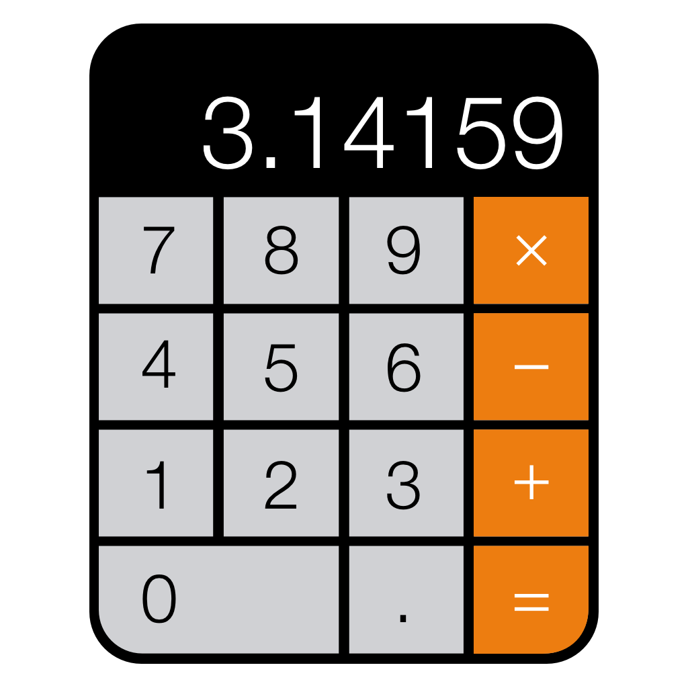

<!--
Create tabs with an icon and label, using the tabs-positive style.
Each tab's child <ion-nav-view> directive will have its own
navigation history that also transitions its views in and out.
-->
<ion-tabs class="tabs-icon-top tabs-color-active-positive">

  <!-- Dashboard Tab -->
  <ion-tab title="Calorie Rate" icon-off="ion-ios-information-outline" icon-on="ion-ios-information" href="#/tab/about">
    <ion-nav-view name="tab-about"></ion-nav-view>
  </ion-tab>

 
 <a href="http://localhost:63248/caloriecalc.aspx"></a> 
   
  <!-- Account Tab -->
  
</ion-tabs>
